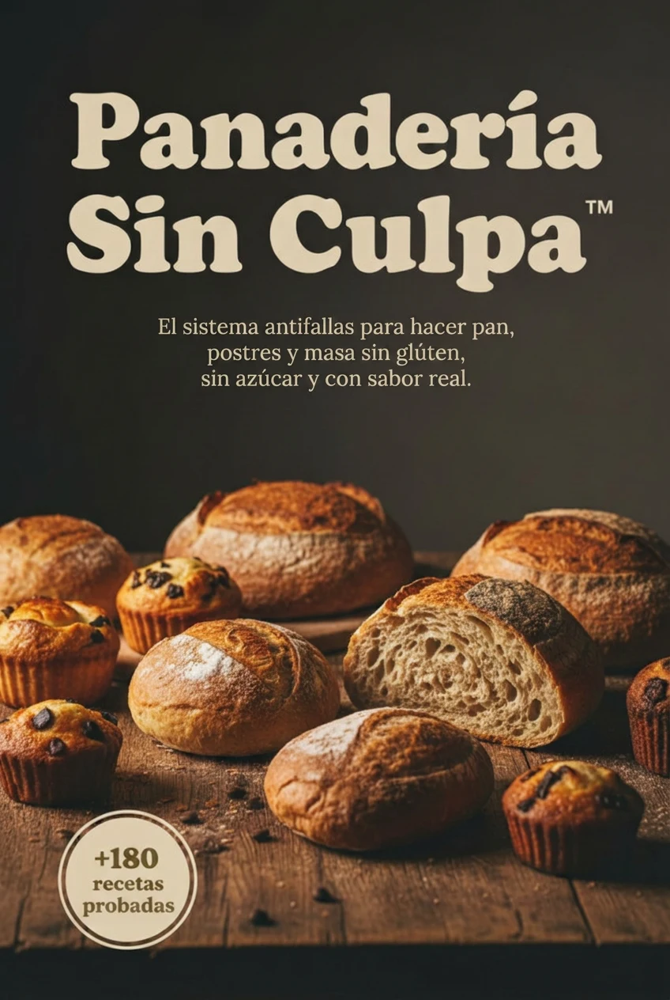
EL LIBRO COMPLETO · Panadería Sin Culpa™
Vuelve a comer pan y postres sin culpa, sin miedo y sin renunciar al sabor
Sin gluten y sin azúcar refinada, con el Método Antifallas™ para que tus recetas salgan bien.
+180 recetas de panes, tortas, postres y snacks, con ingredientes fáciles de conseguir.
- Panes
- Tortas
- Postres
- Snacks
Incluye 5 bonos y un bono sorpresa, sin costo extra.
- ✓ Libro digital en PDF
- ✓ Pago único, sin suscripciones
- ✓ Garantía de 7 días
Lo que vas a poder preparar.
-
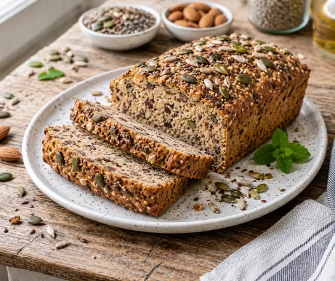
Panes -
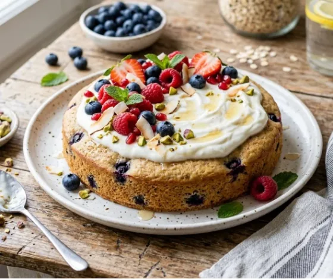
Tortas y bizcochos -
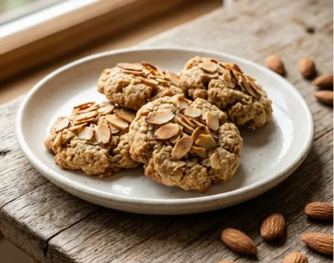
Galletas y snacks -
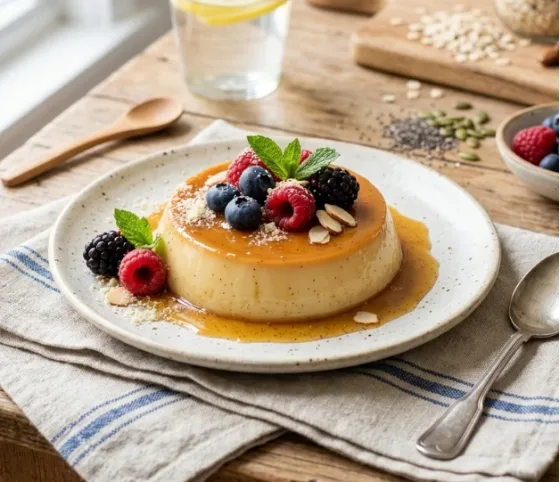
Postres
Las fotos ilustran las recetas del libro; tus resultados pueden verse distintos.
No es solo un libro de recetas. Es un método.
La mayoría de las recetas saludables fallan porque no explican la proporción ni la hidratación, y por eso salen secas o duras. El Método Antifallas™ enseña a corregirlo.
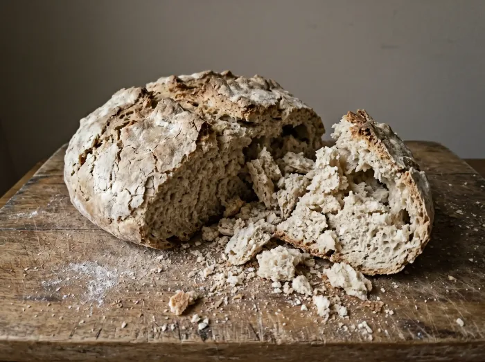
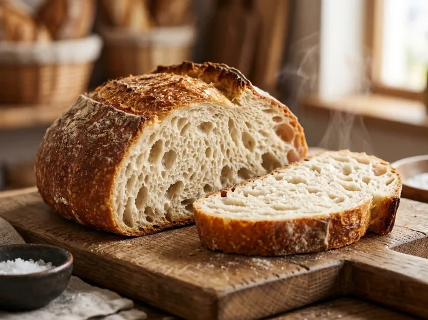
- 1 La proporción importa más que el ingrediente.
- 2 La hidratación decide la textura.
- 3 Una sola comida para toda la familia, sin cocinar doble.
Lo que trae el libro.
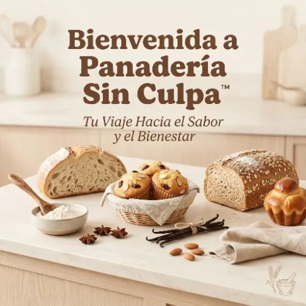
Bienvenida
Cómo usar el libro y en qué orden.
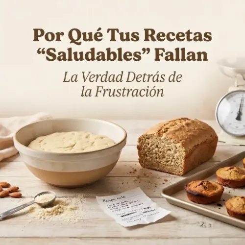
Por qué fallan tus recetas
Los errores comunes y por qué no es tu culpa.
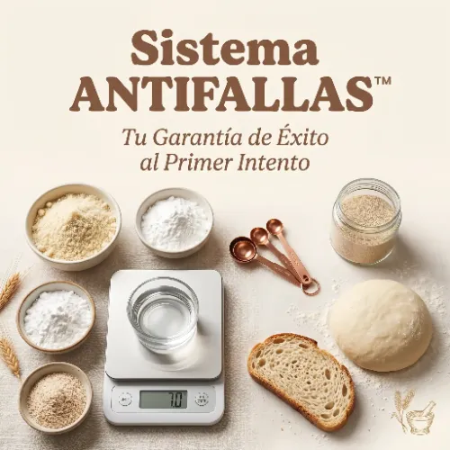
Antifallas™
Los pilares para hacer cualquier receta con más seguridad.
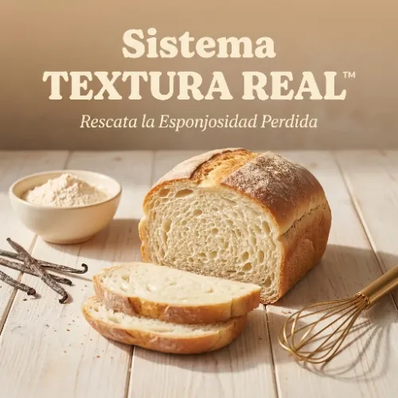
Textura Real™
La técnica para lograr miga esponjosa y húmeda.
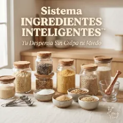
Ingredientes Inteligentes™
Qué harinas y endulzantes usar, en qué proporción, y qué se puede cambiar.
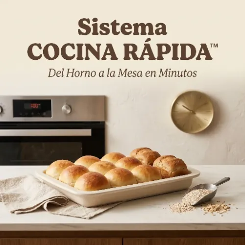
Cocina Rápida™
Recetas en 20 a 40 minutos para días ocupados.
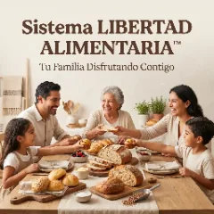
Libertad Alimentaria™
Para que toda tu familia coma lo mismo, sin sentirse excluida.
Libro digital en PDF, en español · Pago único · Acceso inmediato después del pago. Las portadas son ilustraciones: no se envía nada físico.
Y de regalo, estos bonos.
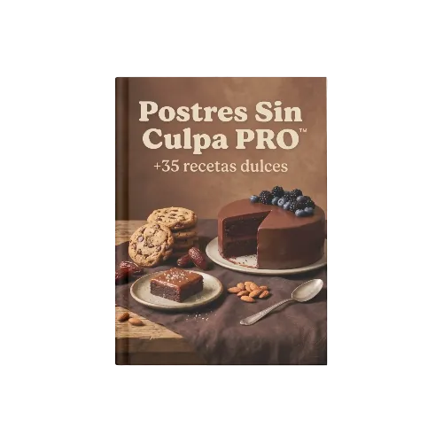
IncluidoPostres Sin Culpa PRO™
Recetas dulces sin gluten y sin azúcar refinada.
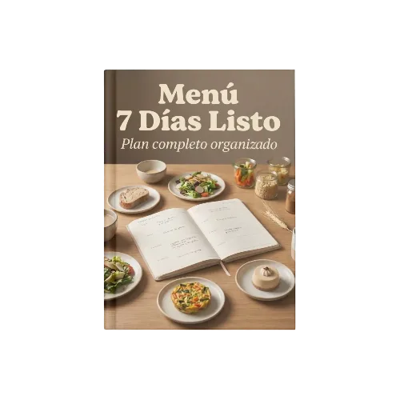
IncluidoMenú 7 Días Listo
Una semana organizada de desayuno, almuerzo, merienda y cena.
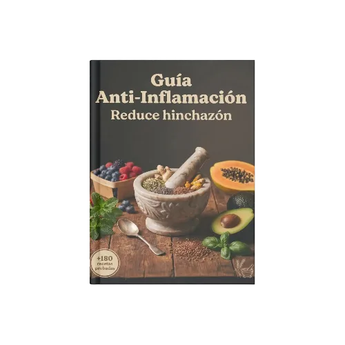
IncluidoGuía Anti-Inflamación
Ingredientes y combinaciones para cocinar más ligero.
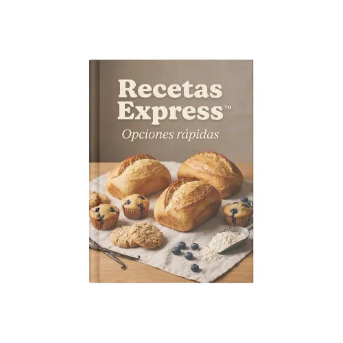
IncluidoRecetas Express
Panes, postres y masas en pocos minutos.
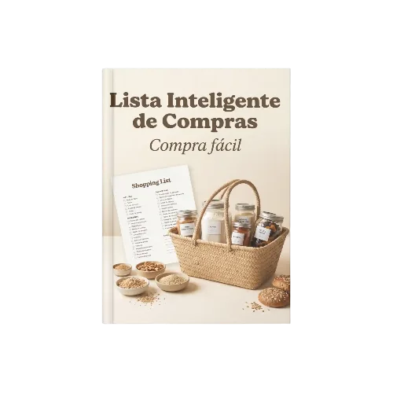
IncluidoLista Inteligente de Compras
Qué comprar y dónde conseguirlo en Latinoamérica, con alternativas.
Bono sorpresa
Lo descubres al acceder.

Garantía de 7 días.
Prueba el libro y, si no es lo que esperabas, escríbenos dentro de los 7 días y te devolvemos tu dinero.
¿Lista para volver a comer pan sin miedo?
- ✓ Libro digital en PDF
- ✓ Pago único, sin suscripciones
- ✓ Garantía de 7 días
Pago único
Quiero el libroLo que dicen quienes ya lo probaron
Preguntas frecuentes
¿Cómo recibo el libro?
Después de que Whop confirma tu pago, puedes leer o descargar el PDF ahí mismo, en el mismo navegador — incluso desde el navegador interno de Instagram. Si tienes algún problema, escríbenos con tu comprobante de compra.
¿Es un libro físico?
No. Es un libro digital en PDF, en español. No se envía nada físico.
¿Me cobran cada mes?
No. Es un pago único de $21.99 USD.
¿Funciona si nunca he horneado?
Sí. El libro explica cada paso y te enseña a corregir errores comunes.
¿Los ingredientes se consiguen en Latinoamérica?
Las recetas usan ingredientes que se encuentran en supermercados y tiendas naturistas, y el libro trae alternativas.
¿Es adecuado si tengo diabetes, prediabetes o celiaquía?
Las recetas no llevan azúcar refinada y hay opciones sin gluten, pero este libro no es consejo médico. Si tienes diabetes, celiaquía u otra condición, consulta con tu médico o nutricionista. Si tienes celiaquía, revisa que cada ingrediente esté certificado sin gluten.
¿"Sin azúcar refinada" significa que no tiene ningún azúcar?
No. Las frutas y otros ingredientes pueden aportar azúcares naturales; las recetas no llevan azúcar refinada.